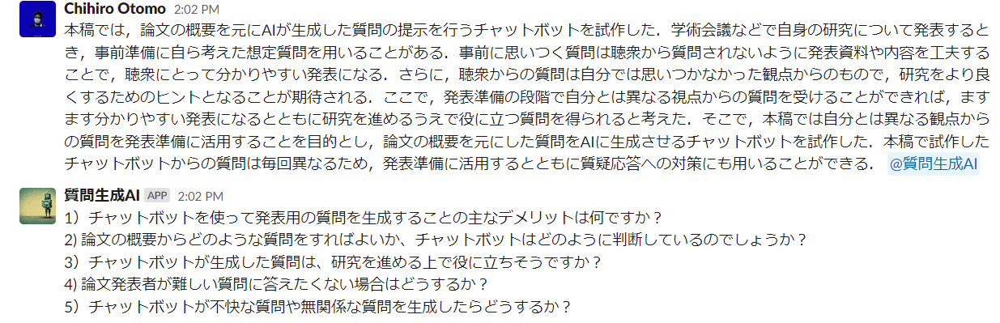

概要
本稿では,論文概要を基に言語モデルが生成した質問を提示する AI システムを提案する.学会や研究グループ内で研究発表するとき,事前準備として自ら考えた想定質問を用いることがある.想定質問を用いた発表準備には,予め研究グループの同期や指導教員から質問を集め,本番の質疑応答では想定した質問のみがなされるように期待する文化もある.このような文化では,想定外の質問がなされることがいわば失敗となる.本稿ではそうした集合知的なアプローチですら想定できない質問を集めることこそが発表の意義であると考えた.なぜなら,それこそが研究グループ内で得られない視点だからであり,研究を進めるためのヒントとなるからである.想定外の質問を集めるためには,想定質問に対する回答を全て発表内に含め,想定内の質問はそもそも質問されないようにすることが望ましい.そこで,本稿ではそうした質問を発表準備に活用することを目的とし,論文の概要を基にした質問を AI に生成させるシステムを提案する.
論文（PDF）
https://www.wiss.org/WISS2022Proceedings/data/2-B05.pdf
発表
WISS 2022:第30回インタラクティブシステムとソフトウェアに関するワークショップ研究室DB（書誌情報など）
https://www.miyashita.com/researches/393Ws6JhPoyCsM4LtyrRaE実装
python3.8でSlack Botを作成
ソースコード: https://github.com/chio-no/AI-QuestionGenerator-From-ResearchSummary.git
※GPT-3のパラメータはソースコードからご確認いただけます
動作例
※使用しているテキストは論文執筆時点での草案です
コメント
2022年の内に発表出来て良かった。